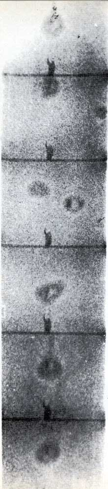

 |
BIOFORMS IN MOVIES
Frames excerpted from infrared mo-
tion picture footage show bioforms
around the author on the Mojave desert
in California before sunup. The bio-
forms change shape, position, and also
appear to divide like amoebae at tre-
mendous speeds. This sequence was shot
at 24 frames per second. The whole
happening shown occurred in approxi-
mately a quarter of a second. The au-
thor's view is that such materializations
into the infrared occur in response to
certain positions, motions and orienta-
tions of the "target human", which are
poorly understood. He holds that the
same factors govern UFO materializa-
tions in the earth environment.
Next page of photos |